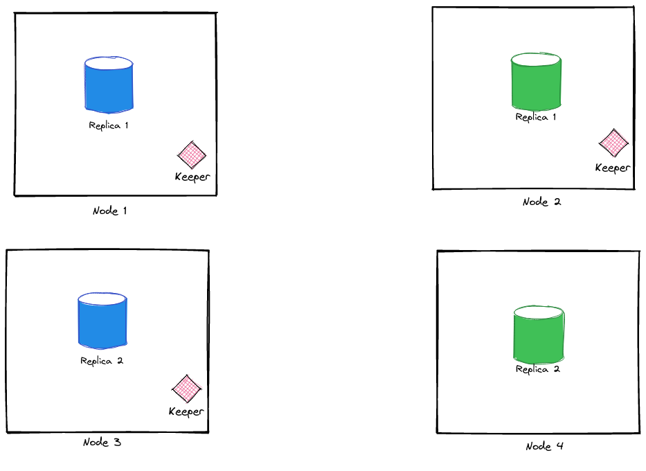
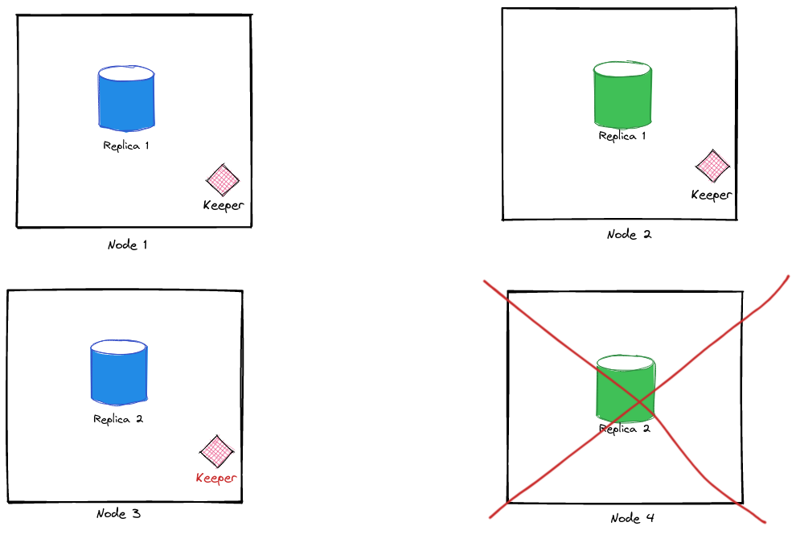
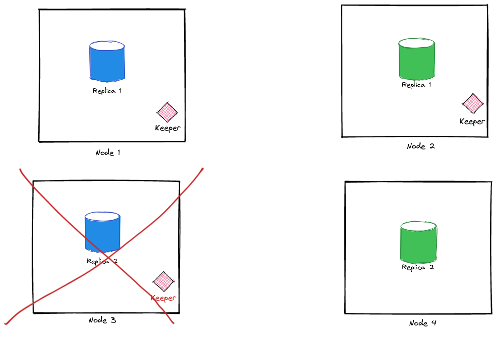
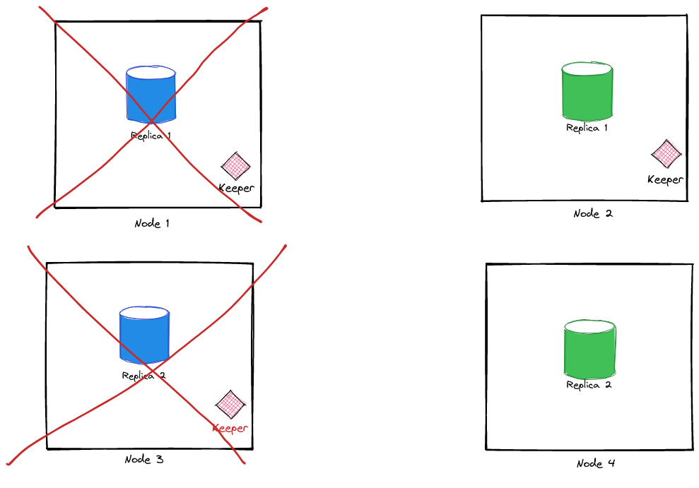
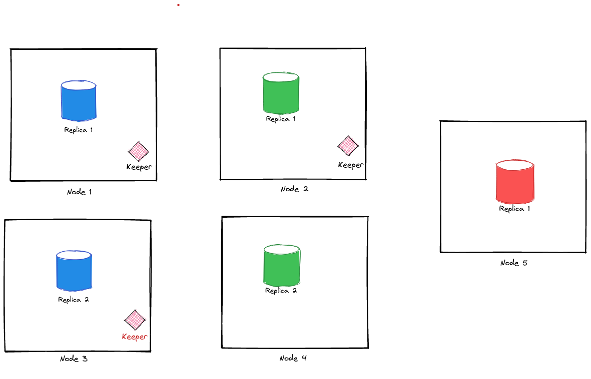

Using ClickHouse Keeper for Replication
ClickHouse is an extremely performant columnar DB used for fast analytical processing. ClickHouse supports data replication using Apache Zookeeper which needs to be deployed externally. While Zookeeper works well after you've tuned it properly, it was still an additional maintenance overhead. The good news is that you don't have to worry about this anymore.
ClickHouse 21.12 release annoucement mentions ClickHouse Keeper as feature complete. Keeper is a replacement for Zookeeper, written in C++ and uses the RAFT algorithm for consensus across different nodes in the cluster. It also has some nice improvements over Zookeeper, such as compressed snapshots/logs of the state changes in the cluster and the ability to run it inside the server binary itself. I decided to spin up a local Clickhouse cluster and test out the new clickhouse-keeper feature.
For our local setup, we'll set up 4 nodes. We'll create 2 shards to distribute our data and each shard will have 2 replicas each. The setup looks something like this:

We need to run clickhouse-keeper only on 3 of these nodes to ensure a quorum. Here's a sample docker-compose.yml to spin up these nodes as containers:
version: "3.7"
x-clickhouse-defaults: &clickhouse-defaults
restart: unless-stopped
image: yandex/clickhouse-server:21.12.2.17
ulimits:
nproc: 65535
nofile:
soft: 262144
hard: 262144
services:
clickhouse-blue-1:
<<: *clickhouse-defaults
container_name: clickhouse-blue-1
hostname: clickhouse-blue-1
ports:
- 9000:9000
- 8123:8123
- 9181:9181
volumes:
- type: volume
source: ch-blue-1-data
target: /var/lib/clickhouse
- "./configs/gen/clickhouse-blue-1:/etc/clickhouse-server/config.d/"
clickhouse-blue-2:
<<: *clickhouse-defaults
container_name: clickhouse-blue-2
hostname: clickhouse-blue-2
ports:
- 9001:9000
- 8124:8123
- 9182:9181
volumes:
- type: volume
source: ch-blue-2-data
target: /var/lib/clickhouse
- "./configs/gen/clickhouse-blue-2:/etc/clickhouse-server/config.d/"
clickhouse-green-1:
<<: *clickhouse-defaults
container_name: clickhouse-green-1
hostname: clickhouse-green-1
ports:
- 9002:9000
- 8125:8123
- 9183:9181
volumes:
- type: volume
source: ch-green-1-data
target: /var/lib/clickhouse
- "./configs/gen/clickhouse-green-1:/etc/clickhouse-server/config.d/"
clickhouse-green-2:
<<: *clickhouse-defaults
container_name: clickhouse-green-2
hostname: clickhouse-green-2
ports:
- 9003:9000
- 8126:8123
- 9184:9181
volumes:
- type: volume
source: ch-green-2-data
target: /var/lib/clickhouse
- "./configs/gen/clickhouse-green-2:/etc/clickhouse-server/config.d/"
volumes:
ch-blue-1-data:
ch-blue-2-data:
ch-green-1-data:
ch-green-2-data:
clickhouse-keeper runs only if the <keeper_config> section is present inside the config. Here's a sample config:
<clickhouse>
<keeper_server>
<tcp_port>9181</tcp_port>
<server_id>${SERVER_ID}</server_id>
<log_storage_path>/var/lib/clickhouse/coordination/log</log_storage_path>
<snapshot_storage_path>/var/lib/clickhouse/coordination/snapshots</snapshot_storage_path>
<coordination_settings>
<operation_timeout_ms>10000</operation_timeout_ms>
<session_timeout_ms>30000</session_timeout_ms>
<raft_logs_level>trace</raft_logs_level>
</coordination_settings>
<raft_configuration>
<server>
<id>1</id>
<hostname>clickhouse-blue-1</hostname>
<port>9234</port>
</server>
<server>
<id>2</id>
<hostname>clickhouse-blue-2</hostname>
<port>9234</port>
</server>
<server>
<id>3</id>
<hostname>clickhouse-green-1</hostname>
<port>9234</port>
</server>
</raft_configuration>
</keeper_server>
</clickhouse>
There are some other configs required for Clickhouse to discover other nodes and enable replication. You can find a working example in this repo.
Verifying Cluster State
Once the containers are configured and running, we can verify if the replication is working as intended:
Let's first check if the keeper daemon is running by:
echo ruok | nc 127.0.0.1 9181
imok
ruok is a part of Four Letter Commands that are mostly used to diagnose Keeper's client/server.
To ensure that clickhouse-server is aware of the keeper cluster, we can query the system.zookeeper table:
SELECT *
FROM system.zookeeper
WHERE path = '/'
FORMAT Vertical
Query id: 287d3c2d-b93f-4d48-b335-6df2f89a8ab3
Row 1:
──────
name: clickhouse
value:
czxid: 3
mzxid: 3
ctime: 2021-12-17 09:11:05
mtime: 2021-12-17 09:11:05
version: 0
cversion: 1
aversion: 0
ephemeralOwner: 0
dataLength: 0
numChildren: 1
pzxid: 4
path: /
If you don't see any results in the system.zookeeper table, then re-check if zookeeper section is present inside the config. This config tells ClickHouse how to discover keeper nodes.
We can also see if our cluster is configured correctly with:
SELECT
host_name,
host_address,
replica_num
FROM system.clusters
WHERE cluster = 'events'
Query id: a4bacfa1-d3aa-482f-b8b2-30b05442a173
┌─host_name──────────┬─host_address─┬─replica_num─┐
│ clickhouse-blue-1 │ 172.19.0.5 │ 1 │
│ clickhouse-blue-2 │ 172.19.0.3 │ 2 │
│ clickhouse-green-1 │ 172.19.0.4 │ 1 │
│ clickhouse-green-2 │ 172.19.0.2 │ 2 │
└────────────────────┴──────────────┴─────────────┘
(Here events is our cluster name specified in the remote_servers section of the config.)
Inserting Sample Data
Let's create a DB and add some data to the DB. We need to ensure that our data is split across shards and we can query all shards using a central view.
Cluster Schema
CREATE DATABASE app ON CLUSTER 'events';
CREATE TABLE app.events_local ON CLUSTER '{cluster}' (
time DateTime,
event_id Int32,
uuid UUID
)
ENGINE = ReplicatedMergeTree('/clickhouse/tables/{cluster}/{shard}/{table}', '{replica}')
PARTITION BY toYYYYMM(time)
ORDER BY (event_id);
CREATE TABLE app.events_main ON CLUSTER '{cluster}' AS app.events_local
ENGINE = Distributed('{cluster}', app, events_local, rand());
What's happening here:
- We'll create a sample database
appwith a single tableevents_local. - We're using
ReplicatedMergeTreehere as that tellsClickHouseto automatically replicate the data inside the table when it's inserted.- Properties like
cluster/shard/replicaare automatically populated from the server's macros. It's a handy feature that allows you to execute this command just once on the cluster and it automatically populates the relevant config in each server.
- Properties like
- Finally we create a
Distributedtable to perform ourINSERT/SELECToperations in a central place. It's possible to manually insert data to particular replicas, but since Clickhouse supports load balancing across shards, it's preferred to create a table with aDistributedengine and let that happen automatically.- Write operations can be sharded based on a particular column name, but here we are simply using the
rand()function, which splits the write randomly to different shards. - All read operations are parallelized and Clickhouse selects one replica from each shard to query the data from.
- Write operations can be sharded based on a particular column name, but here we are simply using the
- We use
ON CLUSTERkeyword to indicate that this query has to be run on all servers which are part of the clusterevents.
It's now time to insert some random data, for which you can use this command:
INSERT INTO app.events_main VALUES (now(), rand(1), generateUUIDv4());
We can now query the table and see if our records are present:
SELECT *
FROM app.events_main
┌────────────────time─┬───event_id─┬─uuid─────────────────────────────────┐
│ 2021-12-17 09:36:17 │ 1888949839 │ 3c33305e-8ea0-4ac1-a07a-667465ec9a85 │
└─────────────────────┴────────────┴──────────────────────────────────────┘
┌────────────────time─┬───event_id─┬─uuid─────────────────────────────────┐
│ 2021-12-17 09:36:16 │ -689113926 │ 2a944d71-73f3-4491-b851-4f0e6f296e44 │
└─────────────────────┴────────────┴──────────────────────────────────────┘
┌────────────────time─┬──event_id─┬─uuid─────────────────────────────────┐
│ 2021-12-17 09:36:15 │ 415899002 │ 5980299f-1594-4c17-8eb5-e512f15ecf34 │
└─────────────────────┴───────────┴──────────────────────────────────────┘
┌────────────────time─┬───event_id─┬─uuid─────────────────────────────────┐
│ 2021-12-17 09:36:16 │ 1303963476 │ 0b27d5bd-6315-4937-82a4-18199e5eebb7 │
└─────────────────────┴────────────┴──────────────────────────────────────┘
Now, you must be wondering how to check if the data is replicated and how the data is distributed across our shards. For that, we can use the handy remote() function:
SELECT *
FROM
(
SELECT
hostName(),
*
FROM remote('172.20.0.2', 'app', 'events_local')
UNION ALL
SELECT
hostName(),
*
FROM remote('172.20.0.3', 'app', 'events_local')
UNION ALL
SELECT
hostName(),
*
FROM remote('172.20.0.4', 'app', 'events_local')
UNION ALL
SELECT
hostName(),
*
FROM remote('172.20.0.5', 'app', 'events_local')
)
Query id: 34a81447-a31b-4915-9bd8-7a6e17bb0860
┌─hostName()────────┬────────────────time─┬───event_id─┬─uuid─────────────────────────────────┐
│ clickhouse-blue-2 │ 2021-12-17 09:36:17 │ 1888949839 │ 3c33305e-8ea0-4ac1-a07a-667465ec9a85 │
└───────────────────┴─────────────────────┴────────────┴──────────────────────────────────────┘
┌─hostName()────────┬────────────────time─┬───event_id─┬─uuid─────────────────────────────────┐
│ clickhouse-blue-1 │ 2021-12-17 09:36:17 │ 1888949839 │ 3c33305e-8ea0-4ac1-a07a-667465ec9a85 │
└───────────────────┴─────────────────────┴────────────┴──────────────────────────────────────┘
┌─hostName()─────────┬────────────────time─┬──event_id─┬─uuid─────────────────────────────────┐
│ clickhouse-green-2 │ 2021-12-17 09:36:15 │ 415899002 │ 5980299f-1594-4c17-8eb5-e512f15ecf34 │
└────────────────────┴─────────────────────┴───────────┴──────────────────────────────────────┘
┌─hostName()─────────┬────────────────time─┬───event_id─┬─uuid─────────────────────────────────┐
│ clickhouse-green-2 │ 2021-12-17 09:36:16 │ -689113926 │ 2a944d71-73f3-4491-b851-4f0e6f296e44 │
└────────────────────┴─────────────────────┴────────────┴──────────────────────────────────────┘
┌─hostName()─────────┬────────────────time─┬───event_id─┬─uuid─────────────────────────────────┐
│ clickhouse-green-2 │ 2021-12-17 09:36:16 │ 1303963476 │ 0b27d5bd-6315-4937-82a4-18199e5eebb7 │
└────────────────────┴─────────────────────┴────────────┴──────────────────────────────────────┘
┌─hostName()─────────┬────────────────time─┬───event_id─┬─uuid─────────────────────────────────┐
│ clickhouse-green-1 │ 2021-12-17 09:36:16 │ 1303963476 │ 0b27d5bd-6315-4937-82a4-18199e5eebb7 │
└────────────────────┴─────────────────────┴────────────┴──────────────────────────────────────┘
┌─hostName()─────────┬────────────────time─┬──event_id─┬─uuid─────────────────────────────────┐
│ clickhouse-green-1 │ 2021-12-17 09:36:15 │ 415899002 │ 5980299f-1594-4c17-8eb5-e512f15ecf34 │
└────────────────────┴─────────────────────┴───────────┴──────────────────────────────────────┘
┌─hostName()─────────┬────────────────time─┬───event_id─┬─uuid─────────────────────────────────┐
│ clickhouse-green-1 │ 2021-12-17 09:36:16 │ -689113926 │ 2a944d71-73f3-4491-b851-4f0e6f296e44 │
└────────────────────┴─────────────────────┴────────────┴──────────────────────────────────────┘
Perfect! We can see our data is sharded as some parts of it exists in green and blue. We can also see that for each record, we have 2 entries thus confirming that ReplicatedMergeTree is doing its job!
Additional Scenarios
All is well and good so far, but to ensure that our cluster setup is resilient we need to introduce our cluster to some Non-Happy scenarios.
Stop a replica node

❯ docker-compose stop clickhouse-green-2
Stopping clickhouse-green-2 ... done
Now, let's query our records:
SELECT count(*)
FROM app.events_main
┌─count()─┐
│ 4 │
└─────────┘
That seems right. We're able to access all our data with just one replica down.
Let's try inserting data and bring back the replica to see if it got automatically replicated or not:
INSERT INTO app.events_main VALUES (now(), rand(1), generateUUIDv4());
Ok.
SELECT *
FROM app.events_main
ORDER BY time DESC
LIMIT 1
┌────────────────time─┬──event_id─┬─uuid─────────────────────────────────┐
│ 2021-12-17 10:09:10 │ 375826335 │ 8dbbc9cf-8f00-4cc3-a4fb-0f17a68340e5 │
└─────────────────────┴───────────┴──────────────────────────────────────┘
Let's start the replica again:
❯ docker-compose start clickhouse-green-2
Starting clickhouse-green-2 ... done
On querying the replica to see if it has the data:
SELECT
hostName(),
*
FROM remote('172.20.0.5', 'app', 'events_local')
ORDER BY time DESC
LIMIT 1
Query id: 422041dc-afe8-4f28-9659-6d58726f8c90
┌─hostName()─────────┬────────────────time─┬──event_id─┬─uuid─────────────────────────────────┐
│ clickhouse-green-2 │ 2021-12-17 10:09:10 │ 375826335 │ 8dbbc9cf-8f00-4cc3-a4fb-0f17a68340e5 │
└────────────────────┴─────────────────────┴───────────┴──────────────────────────────────────┘
Perfect! The record 375826335 automatically got replicated once the replica was healthy.
Stop a Keeper Node

We'll stop a server instance that is running the clickhouse-keeper process. By doing this, we'll also be killing a replica, but that is okay.
❯ docker-compose stop clickhouse-blue-2
Stopping clickhouse-blue-2 ... done
Let's insert some data:
INSERT INTO app.events_main VALUES (now(), rand(1), generateUUIDv4());
Ok
We can check the server information of the other 2 keeper nodes:
$ echo stat | nc 127.0.0.1 9181 | grep Mode
Mode: follower
$ echo stat | nc 127.0.0.1 9183 | grep Mode
Mode: leader
So, one of the keeper nodes has elected itself to be the leader and we have no problems in the setup so far. However, if we stop another keeper node, then there will be only keeper node remaining in the setup and to avoid a Split Brain issue, it won't be able to elect itself as the leader.

What happens then? Only one way to find out:
❯ docker-compose stop clickhouse-blue-1
Stopping clickhouse-blue-1 ... done
INSERT INTO app.events_main VALUES (now(), rand(1), generateUUIDv4());
Received exception from server (version 21.12.2):
Code: 242. DB::Exception: Received from localhost:9000. DB::Exception: Table is in readonly mode (zookeeper path: /clickhouse/tables/events/green/table). (TABLE_IS_READ_ONLY)
Ah! So, we can still query for the data (which will be incomplete since blue shard is completely down), but we cannot insert any new data at all. We can even verify this by querying for the health of the keeper node:
$ echo mntr | nc localhost 9183
This instance is not currently serving requests%
Add a new shard

Alright, so our tests so far have been quite good and show that the cluster is resilient to failures as long as there exists a keeper node running as leader mode in the quorum. Now, let's see how to add a new shard. We'll extend our docker-compose.yml to add a new orange shard:
clickhouse-orange-1:
<<: *clickhouse-defaults
container_name: clickhouse-orange-1
hostname: clickhouse-orange-1
ports:
- 9004:9000
- 8127:8123
- 9185:9181
volumes:
- type: volume
source: ch-orange-1-data
target: /var/lib/clickhouse
- "./configs/gen/clickhouse-orange-1:/etc/clickhouse-server/config.d/"
Inside our remote_servers.xml, we'll add the orange shard as well:
<shard>
<internal_replication>true</internal_replication>
<replica>
<host>clickhouse-orange-1</host>
<port>9000</port>
</replica>
</shard>
That's pretty much it. Let's start the new replica:
docker-compose up
Let's insert some data and query if the shard is getting data or not:
SELECT
hostName(),
*
FROM remote('172.20.0.2', 'app', 'events_local')
Received exception from server (version 21.12.2):
Code: 519. DB::Exception: Received from localhost:9000. DB::Exception: All attempts to get table structure failed. Log:
Code: 279. DB::NetException: All connection tries failed. Log:
There is no table `app`.`events_local` on server: 172.20.0.2:9000
. (ALL_CONNECTION_TRIES_FAILED) (version 21.12.2.17 (official build))
. (NO_REMOTE_SHARD_AVAILABLE)
Houston, we have a problem.
> There is no table `app`.`events_local` on server: 172.20.0.2:9000
This is mentioned in the ClickHouse docs on Replication:
CREATE, DROP, ATTACH, DETACH and RENAME queries are executed on a single server and are not replicated:
This means that although we'd run CREATE DATABASE and CREATE TABLE commands using ON CLUSTER which executes on all servers, but since the orange-1 node is introduced after we ran that command, we need to manually create the DB and Table here. We have to execute the below commands inside the orange-1 replica:
CREATE DATABASE app;
CREATE TABLE app.events_local (
time DateTime,
event_id Int32,
uuid UUID
)
ENGINE = ReplicatedMergeTree('/clickhouse/tables/{cluster}/{shard}/{table}', '{replica}')
PARTITION BY toYYYYMM(time)
ORDER BY (event_id);
That's all that is required. Adding a new replica is also the same process.
Summary
Hope this tutorial helped you figure out how to use clickhouse-keeper to set up a distributed ClickHouse cluster DB. clickhouse-keeper is still a relatively new feature as the docs mention already, but given that it solves operations overhead of running a Zookeeper cluster, it's worth checking it out.
References
- https://www.youtube.com/watch?v=abhcCRW09Ac
- Slides used in above talk: https://presentations.clickhouse.com/meetup54/keeper.pdf
- https://clickhouse.com/docs/en/operations/clickhouse-keeper
- https://github.com/ClickHouse/ClickHouse/tree/master/tests/integration/test_keeper_multinode_simple
- https://github.com/ClickHouse/ClickHouse/issues/2161
For the full code/config samples, you can check out the repo.
Fin!
Updates
- If you have setup RBAC on your cluster, make sure you add
<user>and<password>fields to the<remote_server>configuration.